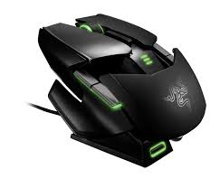

Die Maus ist ein Eingabegerät (Befehlsgeber) bei Computern. Die Entwicklung grafischer Benutzeroberflächen hat die Computermaus zu einem heute praktisch an jedem PC verfügbaren Standardeingabegerät gemacht.

Hier geht es zurück zur Hardware-Liste